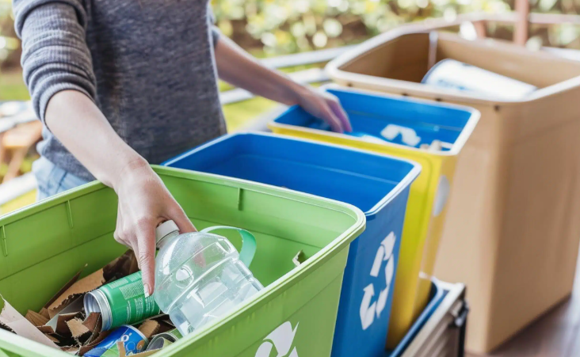

“La Tierra provee lo suficiente para satisfacer las necesidades de cada hombre, pero no la avaricia de cada hombre.”
Experiencia CAS · Abril · Servicio
Cuestión global y problema local
La cuestión global es la contaminación por residuos y el uso ineficiente de recursos. Plásticos, cartón y residuos electrónicos pueden permanecer durante años en el ambiente si no se gestionan correctamente. A nivel local, observé que en mi hogar y en el trabajo de mi papá muchos materiales reciclables podían terminar mezclados con basura común.
Descripción de la experiencia
Me sumé a la campaña general de reciclaje del colegio y separé cartón, residuos electrónicos y botellas de plástico en mi hogar. Además, fui al lugar de trabajo de mi papá para recolectar papel y botellas adicionales que podían ser recuperados en lugar de desecharse.
Evidencias

Reflexión personal (Etapas CAS)
Investigación
Observé que existían residuos reciclables en dos espacios cotidianos y me pregunté cuánto material útil se pierde simplemente por no separarlo desde el origen.
Preparación
Planifiqué la separación en casa y coordiné una visita al trabajo de mi papá para ampliar la recolección.
Acción
Clasifiqué y trasladé cartón, plásticos y materiales electrónicos para incorporarlos a la campaña.
Demostración
La experiencia me hizo notar que reciclar al final del proceso es útil, pero no suficiente. Una solución más completa también implica reducir el consumo y evitar generar residuos innecesarios. Mi satisfacción por recolectar bastante material tenía que ir acompañada de una pregunta más crítica: ¿por qué se produjo tanto material desechable en primer lugar?
Si repitiera la experiencia, además de recolectar registraría cantidades por tipo de residuo y observaría cuáles aparecen con mayor frecuencia. Ese dato permitiría proponer cambios concretos en hábitos de consumo, en lugar de medir el éxito solo por el volumen recogido.
Resultados de aprendizaje logrados
- RA 4: Mostrar compromiso y perseverancia en las experiencias de CAS.
- RA 6: Mostrar compromiso con cuestiones de importancia global.
- RA 7: Considerar el impacto de decisiones cotidianas de consumo y descarte.